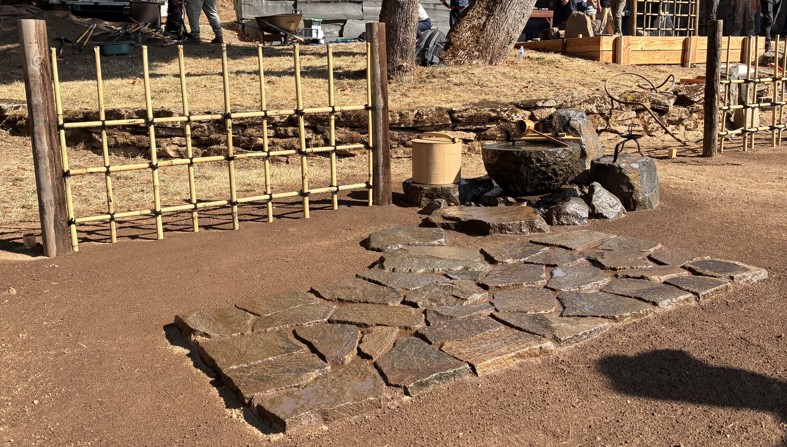
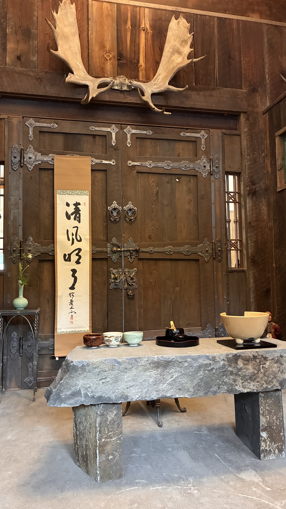
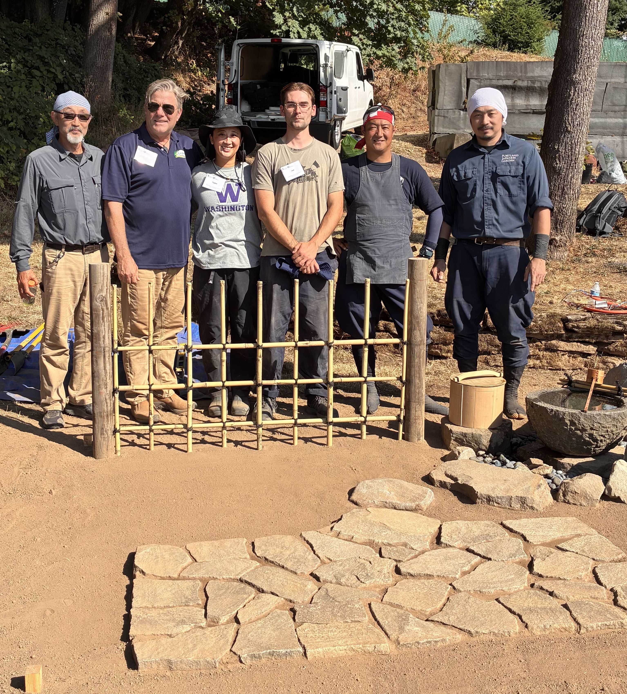

Waza to Kokoro. The phrase translates, roughly, as "hands and heart." Technique and spirit. The two things that, according to the philosophy of the Japanese garden, cannot be separated — and that, if you are honest, rarely are in any discipline worth practicing.

I came to the Waza to Kokoro Seminar at the Portland Japanese Garden thinking I was there to learn technique. To fill gaps in my horticultural education. To sit at the feet of Japanese master gardeners and come away with a more refined understanding of a tradition I'd admired from a distance my whole life.
What I didn't anticipate was that I was also there to grieve something I hadn't known I was still grieving — and to receive something I'd given up hoping to find.
My father and grandfather were Japanese landscape designers and contractors in San Jose, California. This is where my love of the land and the reverance for the natural world around me comes from. It's in the blood, as people say, though I've come to think that phrase undersells it. It's in the hands. It's in the way I instinctively read a site — the slope, the light, the existing character of a place before anything is touched. That way of seeing came from them, passed down the way such things are passed down: not through instruction, but through proximity. Through watching.
Except I didn't get to watch long enough.
Both of them were gone before I found my way to horticulture. By the time I understood what I was drawn to, what I needed to learn, what questions I would have asked — it was too late. The people who carried that knowledge, who could have guided my hands and taught me not just technique but the spirit behind it, were no longer here.
This is the particular grief of late arrival: not just losing someone, but losing what they would have given you if the timing had been different. The inheritance that never transferred. And so I found my way back to gardening the way you find your way to most important things: not by planning it, but because something in you needed somewhere to go.
I want to be honest about what I was carrying into that seminar, because I think it matters for what happened there.
I arrived with a specific hunger. Not just to learn Japanese garden techniques — though that was real — but to recover something I felt I'd been denied. A cultural and horticultural education that should have come through my family and didn't, through no one's fault, because death doesn't keep appointments. I wanted to understand the tradition my father and grandfather worked within. To learn the principles that shaped their hands. To finally receive, from somewhere, what I'd lost the chance to receive from them.
I didn't expect it to actually work. We rarely do, with grief.
What Intentionality Actually Means
What the masters taught first — before any technique, before any tool — was attention.
Japanese garden practice begins with what I've come to think of as reading before touching: long, patient observation of a site's existing character. Its light across seasons. Its natural drainage. The way the eye moves through it and where it wants to rest. The question underlying everything is not "what should I add?" but "what is this place already trying to become?"
Every subsequent action follows from that reading. And here is what struck me most: in Japanese garden philosophy, there are no incidental gestures. Every movement is intentional. Every cut has a reason. Every stone has an orientation that has been considered and reconsidered until it feels not chosen but inevitable. The asymmetry that looks effortless is the result of understanding so deeply internalized it no longer requires thought. The moss covering the ground in the oldest gardens was not planted — it was invited, over decades, by conditions tended with extraordinary care.
Every action tells a larger story. Every stone, every pruned branch, every raked line of gravel is a sentence in a narrative the garden has been telling for longer than any single gardener's life.
When I say intentional, I don't mean rigid. I mean purposeful in the way that a good conversation is purposeful — responsive, present, following the material where it leads rather than forcing it somewhere predetermined. I had not understood this from the outside. You cannot understand it from the outside.
The Way of Tea
And then there was the tea.

I had not expected chado — the Way of Tea — to be part of the seminar, let alone to become the thing I thought about most in the days afterward. Tea ceremony felt, going in, like a cultural artifact. A beautiful ritual. Something to observe.
What I encountered was a philosophy.
The Way of Tea is built on four principles: wa, kei, sei, jaku — harmony, respect, purity, tranquility. But what struck me, sitting in that space, was how fully present the ceremony required you to be. Every movement deliberate. Every gesture an act of care — for the guest, for the object in your hands, for the moment itself. Nothing hurried. Nothing performed for effect. Just presence, given completely, to what is happening right now.
I sat with that for a long time.
We live, most of us, at a pace that makes this kind of presence feel impossible. There is always something pulling at the edges of attention. Chado doesn't solve any of that. But it offers something I hadn't realized I was starving for: a way of being in the world that insists, quietly and without apology, that this moment — this cup, this guest, this garden, this particular quality of afternoon light — deserves your full attention.
Gratitude. Respect. Care for one another. These were not abstract values in that room. They were practiced. They were the whole point.
I have thought about this often since. The world does not slow down on request. But the garden does — or rather, the garden offers you the conditions to slow down yourself, if you accept them. This is, I now believe, one of the things gardens are actually for. Not decoration, not status, but rather the restoration of presence, intentional movement, and peace.
What I Came Away With
I came away with specific things that have changed how I work.
The first is observing before taking any action. Japanese garden practice begins with long observation — understanding a site's existing rhythms before anything is moved or planted. The interventions that work best are the ones that feel inevitable in retrospect. You don't arrive at that by acting quickly.
The second is the value of restraint. Japanese gardens are not minimalist in the cold, photographic sense. They are deeply full. Every element is present because it belongs. The restraint is in the exclusion of anything that doesn't.
The third, and the one I think about most: the understanding that a garden is never finished. In Japanese garden philosophy, a garden is a living system in continuous relationship with the people who tend it. The finest gardens in Japan have been tended by the same families for generations. They carry memory. They carry the hands that shaped them.
There is a poem that was shared during the seminar. I've turned it over in my mind every day since.
I listen, I forget.
I see, I remember.
I do, I understand.
Before I attended the seminar, I had listened to people describe the Japanese garden tradition for years. I had forgotten most of it — not because I wasn't paying attention, but because listening is the shallowest form of knowing. I had looked at photographs, read books, admired gardens from the visitor's path. I remembered impressions. Beauty without structure.
But sitting in that garden, working with those tools, making those movements under the guidance of people who had spent lifetimes internalizing what they were teaching — something shifted. The understanding that comes from doing is different in kind, not just degree. It lives in the hands, not the mind. You cannot think your way to it. You have to arrive through practice.
And I think this is what my father and grandfather knew, in the wordless way that people who have mastered something know it. They didn't teach me through instruction because they never needed instruction themselves. The knowledge was in their hands before it was in any language they could have offered me.
I didn't get to learn from them. That loss is real and I carry it.
But I understand something now that I couldn't have understood any other way — not from a book, not from a photograph, not from listening. I understand it because I did it. Because the masters guided my hands through the same movements that ran in the blood of the men I didn't get to learn from, and something that had been waiting a long time finally landed.
I do, I understand.
I do. And now, finally, I understand.

I want to share a special thanks to Japanese Garden Training Center Program Manager, Yuki Wallen, and my seminar instructors, Hugo Torii, Diane Durston, Jan Waldmann, Mark Bourne, Toshiaki Seki, and Koukai Kirishima, for leading such a transformative seminar. I am forever grateful.